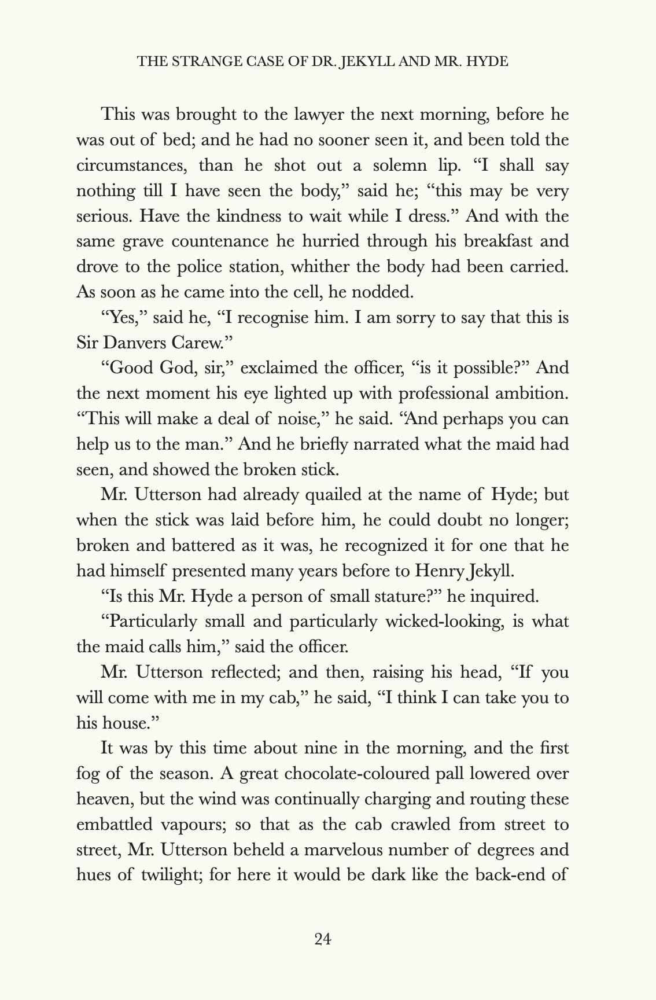

Try the demo
PageFinder comes with The Strange Case of Dr. Jekyll and Mr. Hyde built in. Here is page 24 of the printed book.
Open the demo book in PageFinder, tap Find my page, then photograph this page on your screen or print it. The audiobook plays from the top of the page.

The text is in the public domain. The ebook it is laid out from comes from Standard Ebooks.